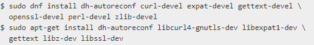
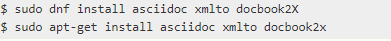
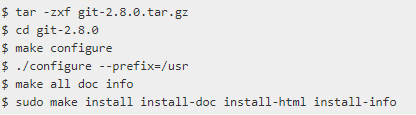

Установка Git на Windows
Прежде чем начать использовать Git, вы должны сделать его доступным на вашем компьютере. Даже если он уже установлен, вероятно, стоит обновить его до последней версии. Вы можете либо установить его как пакет, либо через другой установщик, либо загрузить исходный код и скомпилировать его самостоятельно.
Существует также несколько способов установки Git на Windows. Самая официальная сборка доступна для скачивания на сайте Git. Просто иди к https://git-scm.com/download/win и загрузка начнется автоматически. Обратите внимание, что это проект под названием Git for Windows, который отделен от самого Git; для получения дополнительной информации о нем перейдите по ссылке https://gitforwindows.org.
Чтобы получить автоматическую установку, вы можете использовать пакет Git Chocolatey. Обратите внимание, что пакет Chocolatey(https://community.chocolatey.org/packages/git) поддерживается сообществом.
Установка из исходного кода
Некоторые люди могут вместо этого найти полезным установить Git из исходного кода, потому что вы получите самую последнюю версию. Двоичные установщики, как правило, немного отстают, хотя, поскольку Git созрел в последние годы, это сделало меньше разницы.
Если вы хотите установить Git из исходного кода, вам необходимо иметь следующие библиотеки, от которых зависит Git: autotools, curl, zlib, openssl, expat и libiconv. Например, если вы находитесь в системе, которая имеет dnf(например, Fedora) или apt-get(например, система на базе Debian), вы можете использовать одну из этих команд для установки минимальных зависимостей для компиляции и установки двоичных файлов Git:
Для того чтобы иметь возможность добавлять документацию в различных форматах (doc, html, info), необходимы эти дополнительные зависимости:
$ sudo apt-get install install-info
$ sudo dnf install getopt
Кроме того, если вы используете Fedora/RHEL/RHEL-производные, вам нужно сделать это:
$ sudo ln -s /usr/bin/db2x_docbook2texi /usr/bin/docbook2x-texi
из-за различий в двоичных именах.
Когда у вас есть все необходимые зависимости, вы можете пойти дальше и захватить последний tagged release tarball из нескольких мест. Вы можете получить его через интернет. kernel.org сайт, по адресу https://www.kernel.org/pub/software/scm/git, или зеркало на сайте GitHub, по адресу https://github.com/git/git/releases. Как правило, немного яснее, что такое последняя версия на странице GitHub, но kernel.org страница также имеет подписи выпуска, если вы хотите подтвердить загрузку.
Затем скомпилируйте и установите программу:
После этого вы также можете получить Git через сам Git для обновлений:
$ git clone git://git.kernel.org/pub/scm/git/git.git
Если вы используете дистрибутив на основе Debian (Debian/Ubuntu/Ubuntu-derivatives), вам также нужен install-info пакет:
Если вы используете дистрибутив на основе Debian (Debian/Ubuntu/Ubuntu-derivatives), вам также нужен install-info пакет:
Прошлый урок
Следующий урок